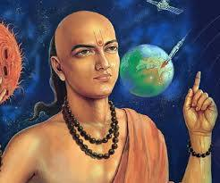

Aryabhata
476 AD - 550 AD
The father of Indian mathematics
Aryabhata was an ancient Indian mathematician and astronomer born in 476 CE. He is renowned for his seminal work, the "Aryabhatiya," composed when he was 23 years old. Aryabhata made significant contributions to mathematics, including the introduction of the concept of zero, the place value system, and algorithms for extracting square and cube roots. In astronomy, he accurately calculated the Earth's circumference, explained the causes of solar and lunar eclipses, and proposed that the Earth rotates on its axis. His work laid the foundation for future developments in both fields in India and influenced scholars in the Islamic Golden Age and Renaissance Europe.
Biographies
Early Life
- Born in 476 CE in Ashmaka, possibly in present-day Bihar, India.
- Studied at the ancient university of Nalanda.
Contributions to Mathematics
- Introduced the concept of zero and the place value system.
- Provided methods for solving linear and quadratic equations.
- Developed algorithms for extracting square and cube roots.
- Worked on the approximation of π (pi), providing a value of 3.1416.
Contributions to Astronomy
- Accurately calculated the Earth's circumference as 39,968 km, very close to the modern value.
- Proposed that the Earth rotates on its axis, explaining the apparent movement of stars.
- Explained the causes of solar and lunar eclipses.
- Calculated the length of the sidereal year as 365.258 days.
Legacy and Influence
- Aryabhata's work laid the foundation for future developments in Indian mathematics and astronomy.
- Influenced Islamic scholars during the Golden Age of Islam.
- His ideas eventually reached Europe, impacting Renaissance scholars.
Later Recognition
- The Aryabhata satellite, India's first satellite, launched in 1975, was named in his honor.
- Various institutions and awards in India are named after Aryabhata to honor his contributions to science.
Death
- Exact date unknown, but he is believed to have lived through the 5th century CE.